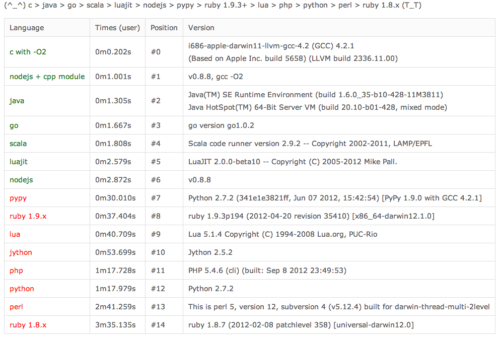

Node.js
new option for scripting
Do you know ?
JavaScript
* 函数可以传递( 函数是一等公民 )
* 封包
* 不类,也能有对象
Do you konw ?
Node.js
* 异步 ? => 异步IO 执行效率的提升
* 异步 . => 编程方式的转变
* 异步 ! => 脑洞大开
Node.js® is a platform built on Chrome's JavaScript runtime
for easily building fast, scalable network applications.
Node.js uses an event-driven, non-blocking I/O model
that makes it lightweight and efficient,
perfect for data-intensive real-time applications
that run across distributed devices.
Not So slow as you think 
Hello X
Nodejs , Tornado , Go , Netty
- Nodejs: http://nodejs.org
- Tornado: http://www.tornadoweb.org
- Go: http://golang.org
- Netty: http://www.jboss.org/netty
Python: Tornado
from tornado.ioloop import IOLoop
from tornado.web import RequestHandler, \
Application
class MainHandler(RequestHandler):
def get(self):
self.write("Hello, world")
application = Application([
(r"/", MainHandler),
])
if __name__ == "__main__":
application.listen(8080)
IOLoop.instance().start()
Go:
package main
import (
"http"
"io"
)
func handler(w http.ResponseWriter, r *http.Request) {
io.WriteString(w, "Hello, world")
}
func main() {
http.HandleFunc("/", handler)
http.ListenAndServe(":8080", nil)
}
Java: Netty
private void handleHttpRequest(
ChannelHandlerContext ctx,
HttpRequest req) throws Exception {
HttpResponse res =
new DefaultHttpResponse(HTTP_1_1, OK);
res.setHeader(CONTENT_TYPE,
"text/html; charset=UTF-8");
setContentLength(res, 11);
res.setContent(
ChannelBuffers.copiedBuffer(
"hello world",
CharsetUtil.US_ASCII));
sendHttpResponse(ctx, req, res);
}
Nodejs:
var http = require('http');
http.createServer(function(req, res){
res.end('Hello, World');
}).listen(8080);
Nodejs: 4CPU
var cluster = require('cluster')
, http = require('http');
var server =
http.createServer(function(req, res) {
res.end('Hello World');
});
cluster(server)
.set('workers', 4)
.use(cluster.stats())
.listen(8080);
测试结果
测试脚本
$ ab -c 30 -n 1000000 http://127.0.0.1:8080/
测试结果对比
| Name | 30 threads rps | 100 rps | 1000 rps | 5000 rps |
|---|---|---|---|---|
| Nodejs | 7,287 | 7,038 | 6,786 | 6,912 |
| Tornado | 2,967 | 2,966 | 2,967 | 2,982 |
| Go | 5,214 | 5,157 | 5,080 | 5,164 |
| Netty | 13,526 | 13,351 | 11,332 | 7,921 |
| Nodejs 4P | 14,826 | 14,332 | 12,161 | 8,287 |
http://www.prahladyeri.com/2014/06/php-vs-node-js-real-statistics/
性能不是关键~
开发效率才是!
var http = require('http');
http.createServer(function(req, res){
res.end('Hello, World');
}).listen(8080);
[FSS@Gitlab]<>
var net = require('net');
var server = net.createServer(function (socket) {
socket.write('Echo server\r\n');
socket.pipe(socket);
});
server.listen(1337, '127.0.0.1');
Event Driven
var net = require('net');
var client = net.connect({port: 8124},
function() { //'connect' listener
console.log('client connected');
client.write('world!\r\n');
});
client.on('data', function(data) {
console.log(data.toString());
client.end();
});
client.on('end', function() {
console.log('client disconnected');
});
message Driven?
INPUT get_cac_mssar_param_req_s( p_unit.ttype, p_unit.index );
...
OUTPUT get_cac_mssar_param_ack_s (status,
p_unit.ttype, p_unit.index, mssar_gg1, mssar_gg3 )
TO g_sender, SET DELIVERY_RANGE = g_delivery,
SND_MSGCOPY_FROM_WO_TO_SPUP = 0;
NEXTSTATE -;
终于开始正题了
Makefile Debug
make -pn | grep ...
or
make -d --dry-run
seeing is believing..
基本原理
- 产生makefile debug
- 过滤无用信息
- 构建依赖关系
- 输出 dep.html (angular.js 交互/ D3绘制依赖)
 Doug McIlroy. October 11, 1964
Doug McIlroy. October 11, 1964
"We should have some ways of connecting programs like garden hose--screw in another segment when it becomes necessary to massage data in another way. This is the way of IO also."
> svn st | grep ^? | xargs rm -f
stream.pipe(stream2).pipe(stream3)
Read the code
个人理解
talk is cheap, show me the code ( 放码过来 )
OS make you more hard and more working hard